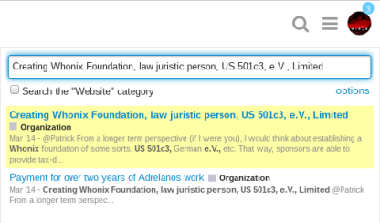
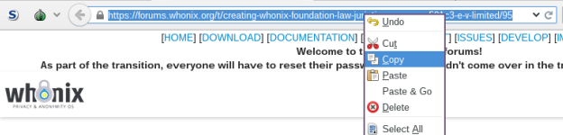

i have made this topic as Wiki so anyone who like to add/edit the topic feel free to improve it.
anyone who have read some whonix documents he will notice that there r some places mentioning:-
discussed here or it is reported from …etc then the link of the forum.
so there r many old forum links inside the documentation topics which needs to be changed to the new one.
so how can u find the old forum links and change/replace them witha new one with no mistakes ?
(it needs some work but overall they r easy steps)
- firstly go to the whonix documentation
- then go to the search field on the top right corner and type
old-forum
- it will be like this
- so now how u gonna fix these links ?
let say u pressed on the first link which is “Main Page” , then press “Edit” on the top left corner of the page , then press on Ctrl+F and type again
old-forum
- u will c this result
- now highlight the link
- then open it in a new tab
- u gonna c the old forum link , now highlight the topic name and copy it
-
now open the new forum (which is the current forum)
https://forums.whonix.org -
and press on the “search” button and paste the old forum topic name

- now u c the first result is matching the old name topic, now press on the topic name inside the new forum and copy the link of it and replace it witha old forum link

- now replace the link witha old forum link inside the documentation then press on “Publish”

-
done. then move to the next documentation pages from the search result and do the same steps again.
-
to check if ur work has been saved or not , just go to the same page that u have fixed the links inside it , in my e.g above i went to the main-page , and u gonna c yellow eye or a clickable word called “pending” click on whatever u c from them (in case of the yellow eye , click on it then click on “change pending”) and u gonna c something like this

- things u should be aware of:-
1- dont scroll down inside the new forum then copy/paste the link to replace the old link because it is going to be a reference to the position of a comment not to the main topic for e,g:-
this link is a reference to the topic name (first comment)
https://forums.whonix.org/t/creating-whonix-foundation-law-juristic-person-us-501c3-e-v-limited/95
but this link
https://forums.whonix.org/t/creating-whonix-foundation-law-juristic-person-us-501c3-e-v-limited/95/4
is a reference to the comment inside the topic NOT the topic itself.
so these r two different things , be sure u dont mistaken with them.
2- sometimes the reference page inside the documentation is meant to be a comment inside the topic but not the topic itself (reverse of point 1- )
so in the old forum for e.g (too bad that the old forum links doesnt tell u which comment number is referring to from the link itself , so u have to count the comment position number using ur eyes inside the forum starting from the first comment down to the referred comment)
this is a reference to the second comment not to the topic , so when u replace it witha new forum link u also refer it to the second comment , and this is very easy to do inside the new forum , just hit the the “topic progress” button which is on the right down corner of the page , then put the page number and press “go” or hit Enter
and u gonna c something added to the link of the forum in the address bar “/2”
https://forums.whonix.org/t/creating-whonix-foundation-law-juristic-person-us-501c3-e-v-limited/95/2
important (to avoid the mistakes dont scroll down while u r looking at the number of comments changing in the address , i prefer to always using “topic progress” button)
-
if there r any other searching words rather than the “old-forum” to refer to the old forum links, if u can @Patrick give them here.
-
just to make everything clear:-
i will do this job and fix the entire documentation whether someone helped or not. but i opened this topic to make the process of fixing faster because it gonna take some several days if im going to do that alone.

{kind=link}
{kind=link}
{kind=link}
{kind=link}
{kind=link}
{kind=link}
{kind=link}